Tøying, styrke og ukeplan
Øvelser fra bakken for hesten din: tøying, styrke og balanse i korte økter med timer, ukeplan og logg – også uten nett i stallen.
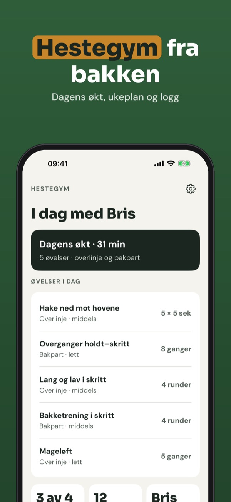
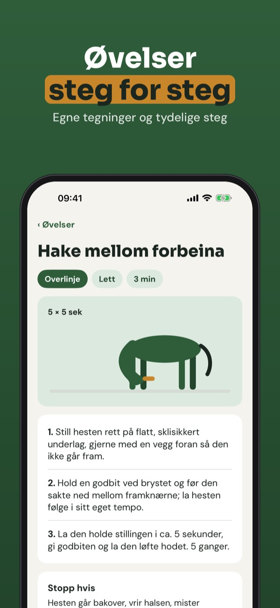
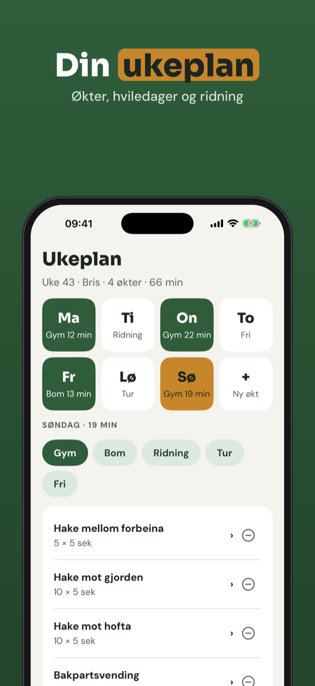
Hestegym er treningsprogrammet for deg som jobber med hesten fra bakken: øvelsesbibliotek, ukeplan, timer og logg på ett sted.
Dagens økt med timer, 12 øvelser og loggen kan brukes uten kjøp. Fullversjonen er et engangskjøp som låser opp hele biblioteket, ukeplaner, påminnelser, fremgang og flere hester. Ingen abonnement.
Hestegym gir ikke veterinærråd og erstatter ikke veterinær eller fysioterapeut. Er hesten skadet, halt eller under behandling: spør veterinæren før du starter.
Terms of Use (EULA): https://www.apple.com/legal/internet-services/itunes/dev/stdeula/
Privacy: https://baytechbv.github.io/privacy/hestegym-eu/
Udstrækning, styrke og ugeplan
Øvelser fra jorden til din hest: udstrækning, styrke og balance i korte træninger med timer, ugeplan og logbog – også uden net i stalden.
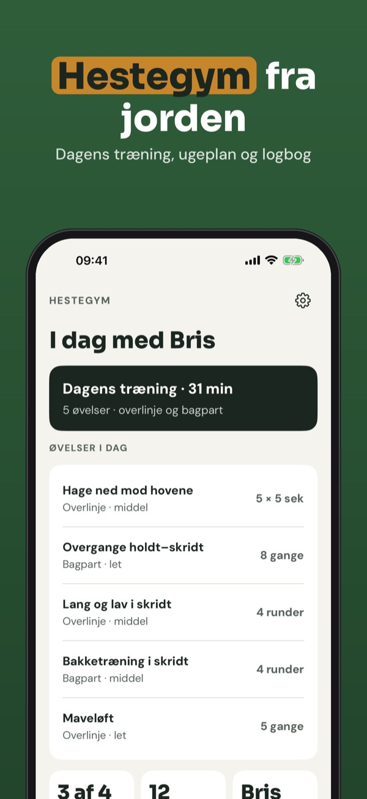
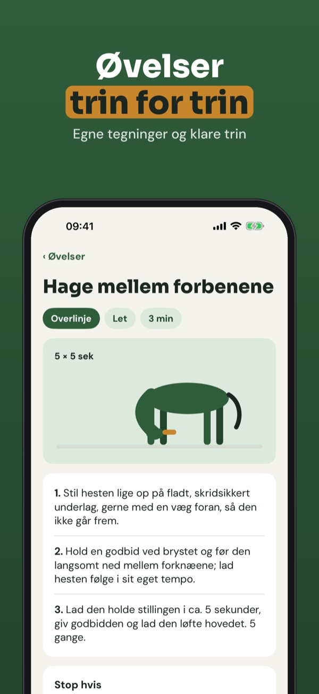
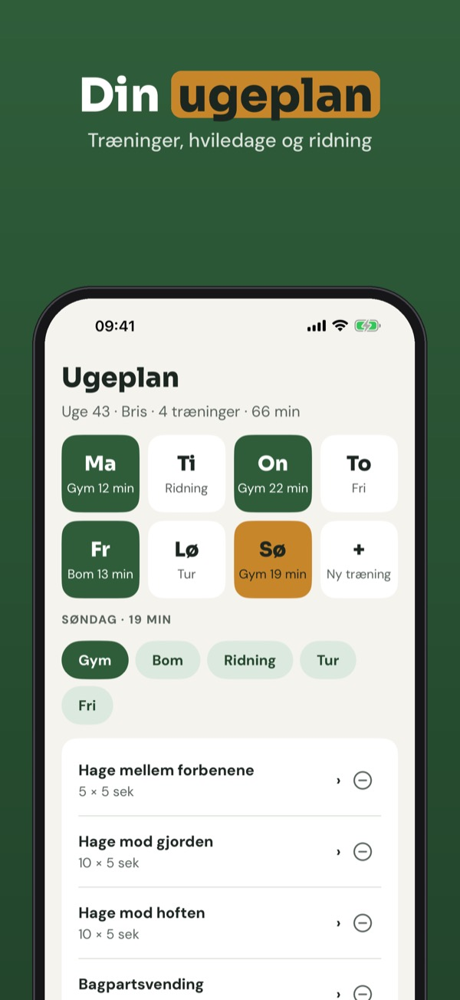
Hestegym er træningsprogrammet til dig, der arbejder med hesten fra jorden: øvelsesbibliotek, ugeplan, timer og logbog samlet ét sted.
Dagens træning med timer, 12 øvelser og logbogen kan bruges uden køb. Den fulde version er et engangskøb, der låser hele biblioteket, ugeplaner, påmindelser, fremskridt og flere heste op. Intet abonnement.
Hestegym giver ikke dyrlægeråd og erstatter ikke dyrlæge eller fysioterapeut. Er hesten skadet, halt eller i behandling: spørg dyrlægen, før du starter.
Terms of Use (EULA): https://www.apple.com/legal/internet-services/itunes/dev/stdeula/
Privacy: https://baytechbv.github.io/privacy/hestegym-eu/
Venyttely, lihaskunto, ohjelma
Maasta tehtävät harjoitukset hevosellesi: venyttely, lihaskunto ja tasapaino lyhyinä treeneinä ajastimella, viikko-ohjelmalla ja päiväkirjalla.
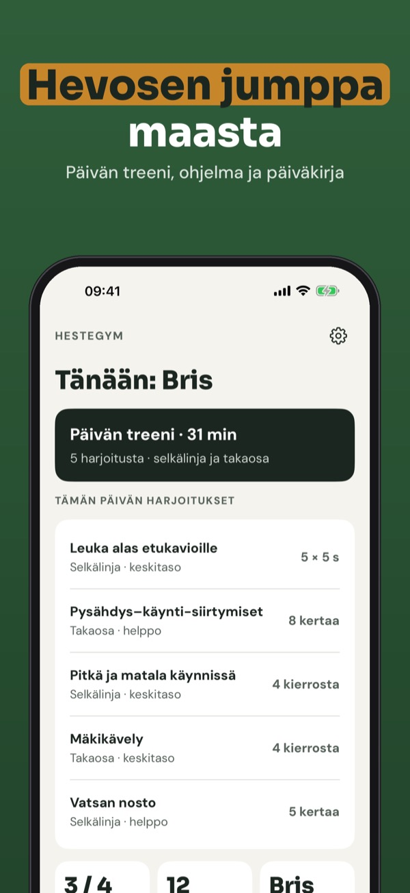
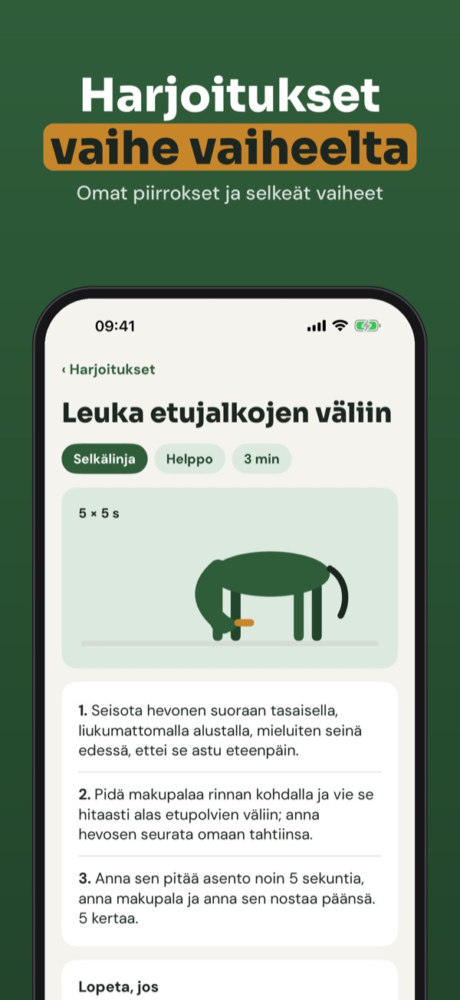
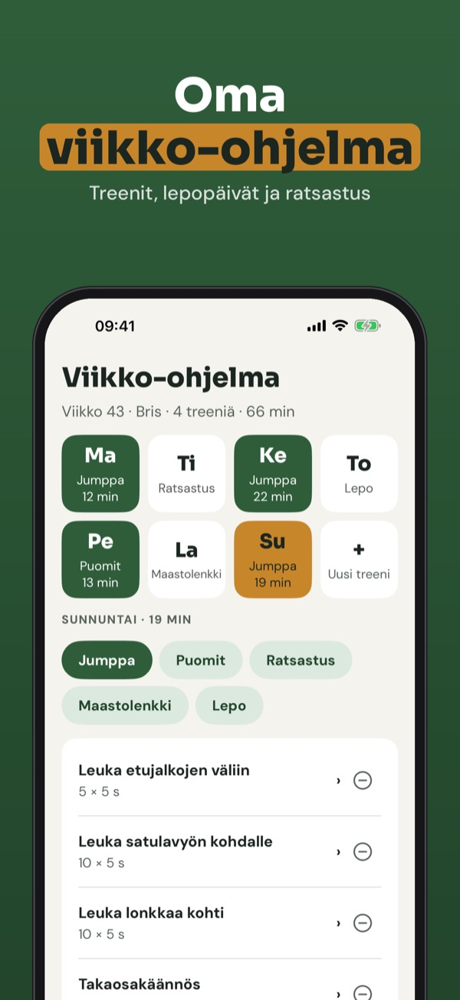
Hestegym on harjoitusohjelma maasta tehtävään työskentelyyn: harjoituskirjasto, viikko-ohjelma, ajastin ja päiväkirja yhdessä paikassa.
Päivän treeniä ajastimella, 12 harjoitusta ja päiväkirjaa voi käyttää ilman ostoa. Täysi versio on kertaosto, joka avaa koko kirjaston, viikko-ohjelmat, muistutukset, edistymisen ja useamman hevosen. Ei tilausta.
Hestegym ei anna eläinlääkärin neuvoja eikä korvaa eläinlääkäriä tai fysioterapeuttia. Jos hevonen on loukkaantunut, ontuu tai on hoidossa, kysy eläinlääkäriltä ennen aloittamista.
Terms of Use (EULA): https://www.apple.com/legal/internet-services/itunes/dev/stdeula/
Privacy: https://baytechbv.github.io/privacy/hestegym-eu/
Dehnen, Kraft und Wochenplan
Übungen vom Boden für dein Pferd: Dehnen, Kraft und Balance in kurzen Einheiten mit Timer, Wochenplan und Tagebuch – auch ohne Internet im Stall.
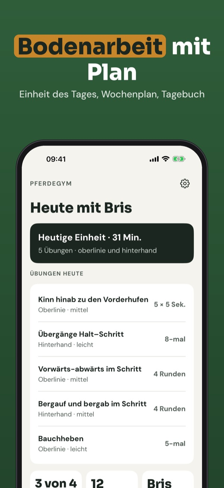
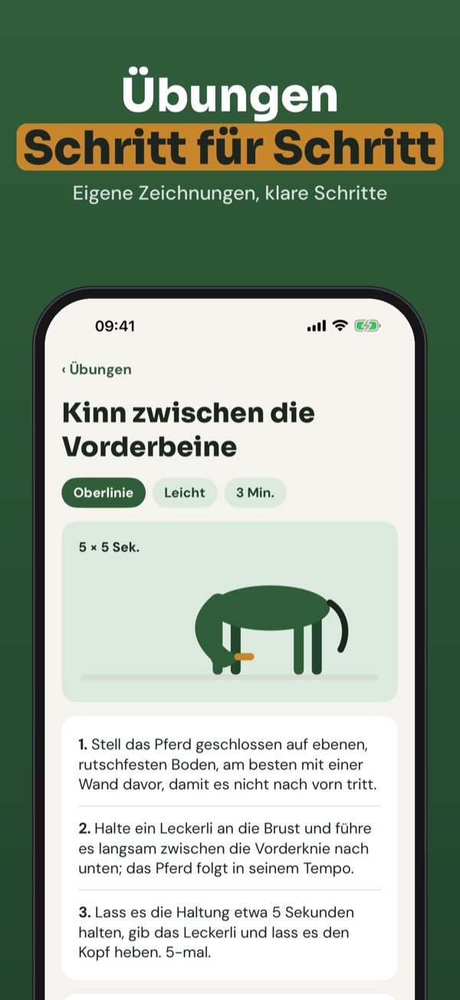
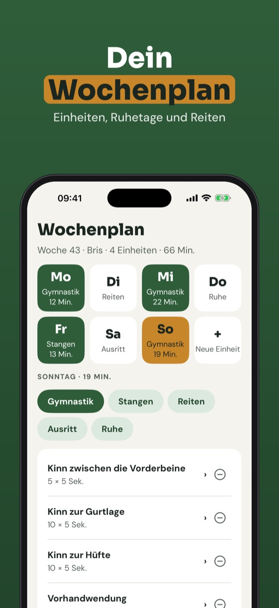
Pferdegym ist das Trainingsprogramm für alle, die ihr Pferd vom Boden aus arbeiten: Übungsbibliothek, Wochenplan, Timer und Tagebuch an einem Ort.
Die Einheit des Tages mit Timer, 12 Übungen und das Tagebuch kannst du ohne Kauf nutzen. Die Vollversion ist ein Einmalkauf und schaltet die ganze Bibliothek, Wochenpläne, Erinnerungen, Fortschritt und mehrere Pferde frei. Kein Abo.
Pferdegym gibt keine tierärztlichen Ratschläge und ersetzt weder Tierarzt noch Physiotherapeut. Ist dein Pferd verletzt, lahm oder in Behandlung, frag vor dem Start deinen Tierarzt.
Terms of Use (EULA): https://www.apple.com/legal/internet-services/itunes/dev/stdeula/
Privacy: https://baytechbv.github.io/privacy/hestegym-eu/
Rekken, kracht en weekschema
Oefeningen vanaf de grond voor je paard: rekken, kracht en balans in korte sessies met timer, weekschema en logboek – ook zonder internet in de stal.
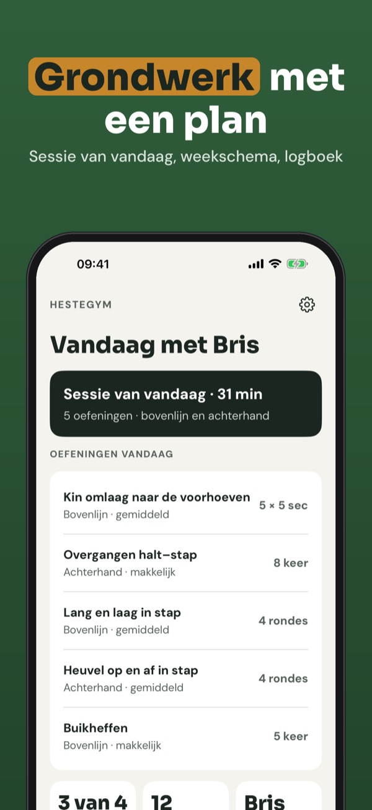
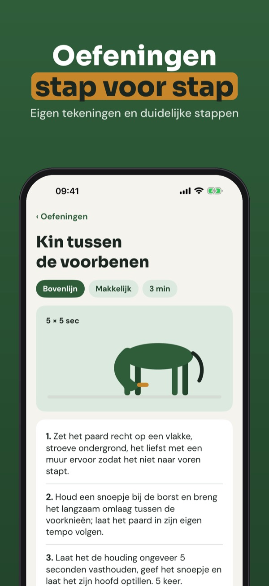
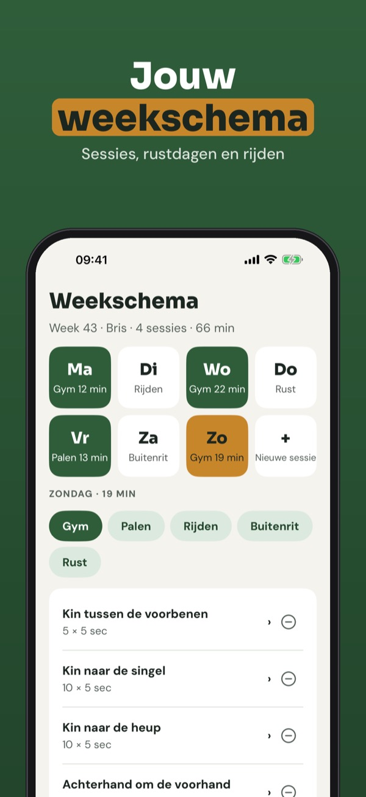
Hestegym is het trainingsprogramma voor iedereen die vanaf de grond met zijn paard werkt: oefeningen, weekschema, timer en logboek op één plek.
De sessie van vandaag met timer, 12 oefeningen en het logboek kun je zonder aankoop gebruiken. De volledige versie is een eenmalige aankoop voor de hele bibliotheek, weekschema’s, herinneringen, voortgang en meer paarden. Geen abonnement.
Hestegym geeft geen veterinair advies en vervangt geen dierenarts of fysiotherapeut. Is je paard geblesseerd, kreupel of onder behandeling: vraag eerst je dierenarts.
Terms of Use (EULA): https://www.apple.com/legal/internet-services/itunes/dev/stdeula/
Privacy: https://baytechbv.github.io/privacy/hestegym-eu/
Töjning, styrka och veckoplan
Övningar från marken för din häst: töjning, styrka och balans i korta pass med timer, veckoplan och loggbok – även utan nät i stallet.
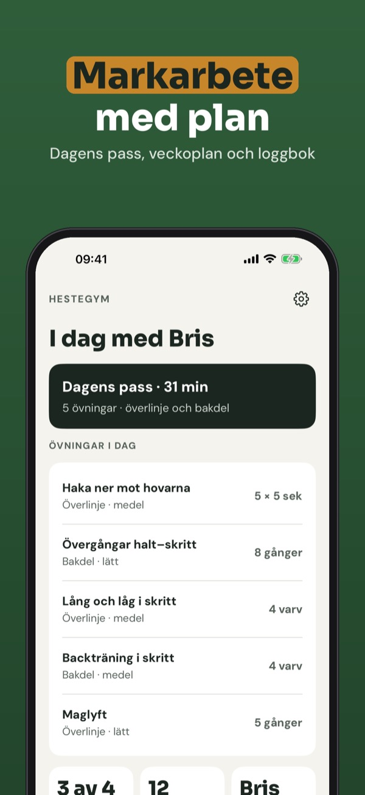
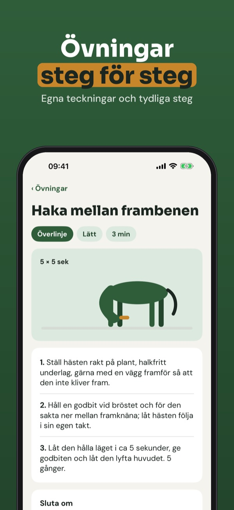
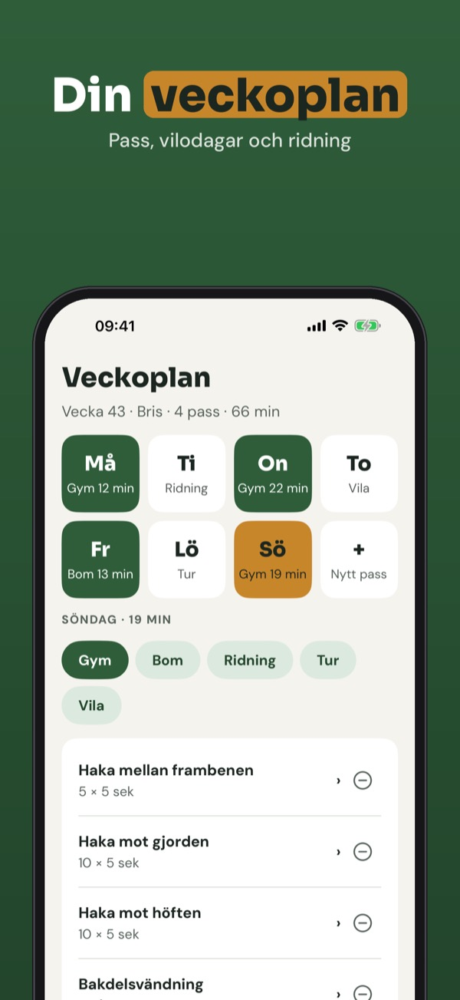
Hestegym är träningsprogrammet för dig som arbetar med hästen från marken: övningsbibliotek, veckoplan, timer och loggbok på ett ställe.
Dagens pass med timer, 12 övningar och loggboken kan användas utan köp. Fullversionen är ett engångsköp som låser upp hela biblioteket, veckoplaner, påminnelser, framsteg och fler hästar. Ingen prenumeration.
Hestegym ger inga veterinärråd och ersätter inte veterinär eller fysioterapeut. Är hästen skadad, halt eller under behandling: fråga veterinären innan du börjar.
Terms of Use (EULA): https://www.apple.com/legal/internet-services/itunes/dev/stdeula/
Privacy: https://baytechbv.github.io/privacy/hestegym-eu/